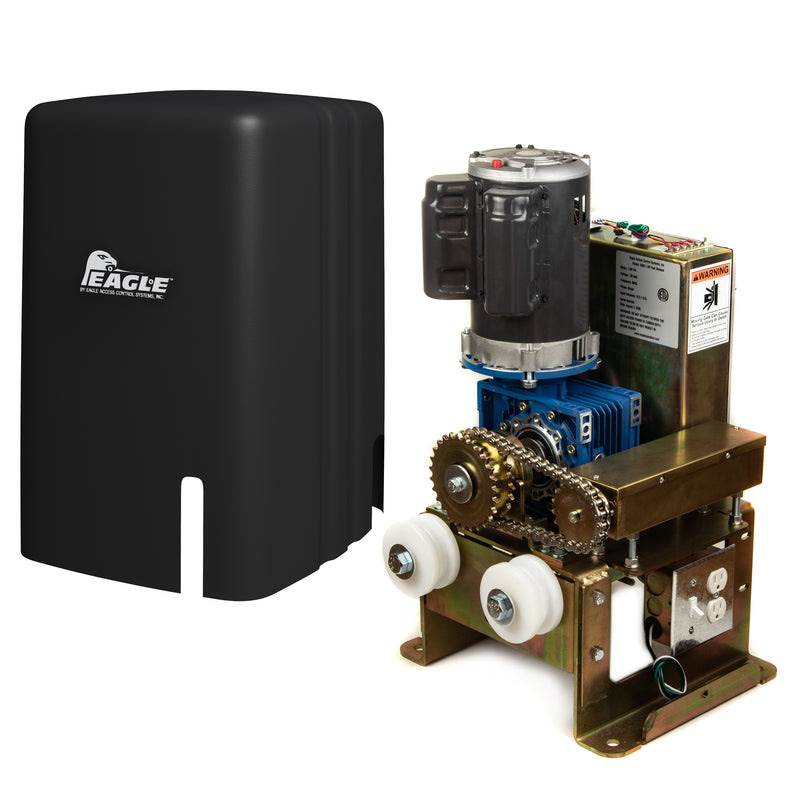
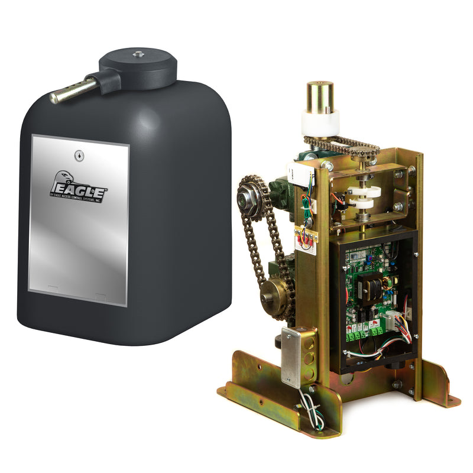
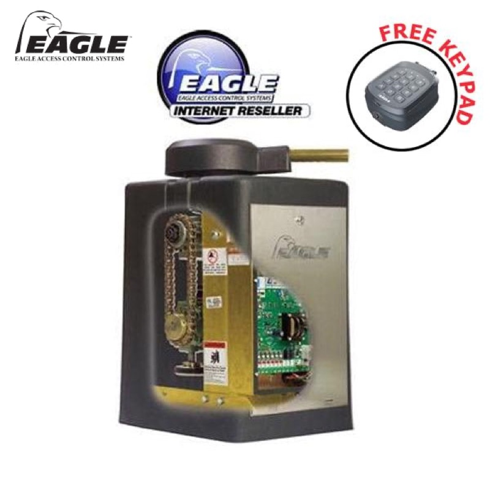

Best value
Eagle-1
For sliding gates up to 18 ft and 300 lb, with 2 remotes, a receiver and a photo eye included.
$1,349
Buy now
Guide
The opener has to match how your gate moves. Here's how to tell which type you need, and the best pick for each.
A slide gate opener sits beside a gate that rolls sideways along a track. It moves the gate with a chain fastened along the gate – Eagle's slide openers ship with 20 ft of nickel-plated chain and a no-weld chain kit.
A swing gate opener drives an arm that pushes the gate open and pulls it shut on its hinges, like a door. A double (two-leaf) gate needs a dual opener that moves both leaves and times the delay between them.
Not sure what size you need? The size guide lists every model's maximum gate length and weight.
From a typical home driveway to long commercial gates.
For sliding gates up to 18 ft and 300 lb, with 2 remotes, a receiver and a photo eye included.


Commercial-grade: gates up to 45 ft and 2,000 lb, with a monitored photo eye included.
Single gates and double gates.

A residential swing opener for gates up to 14 ft and 400 lb, with a quick-release arm.


A dual opener that times the open/close delay between two leaves.